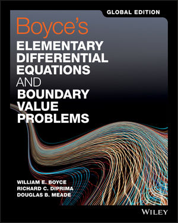

Syllabus for Math 204
Spring 2018
Title of the Course: Differential Equations
Click here to view the syllabus as pdf
Instructors
- Hasan Inci, SCI 268, Office Hours: Mo 10:30-11:30(hinci@ku.edu.tr)
- Tolga Etgu, SCI 105, Office Hours: TuTh 15:00-16:00(tetgu@ku.edu.tr)
Teaching Assistants (TAs)
- Oguz Dogan, SCI 156, Office Hours: Th 14:00-15:00 (odogan13@ku.edu.tr)
- Firtina Kucuk, SCI 156, Office Hours: Tu 14:00-15:00 (fkucuk@ku.edu.tr)
- Murat Can Askarogullari, SCI 130, Office Hours: We 12:30-14:30 (maskarogullari16@ku.edu.tr)
Web Address
http://home.ku.edu.tr/~math204
Textbook
W. E. Boyce, R. C. DiPrima, D.B. Meade, Elementary Differential Equations and Boundary Value Problems, Global/11th Edition (John Wiley & Sons, New York, 2017).
Topics to be covered
Introduction to differential equations (Chapter 1); First order ODEs (ordinary differential equations) (Chapter 2); Second and higher order ODEs (Chapters 3 and 4); Power series solution of ODEs (Chapter 5); The Laplace transform (Chapter 6); Systems of linear ODEs (Chapter 7); Partial differential equations (Chapter 10)
Evaluation method
Students’ progress will be evaluated according to their performance in two midterms and a final exam. The final exam will be a comprehensive exam covering all the material of the course.
The contribution of the exams are as follows:
midterm exams 30% each, final exam 40%.
Problem Sessions
Attendance to the weekly problem sessions is strongly recommended.
The Make-Up Policy
If a student misses only one midterm exam and has a documented valid excuse (e.g., illness, family emergency, or attendance to university endorsed activities) accepted by the Dean’s office, his/her score in the final exam will be substituted for the grade of the exam that is missed. If a student misses more than one midterm exam and/or the final exam, and has a documented valid excuse accepted by the Dean’s office for each one of these exams, a single comprehensive make-up will be given after the final and its grade will be substituted for the grades of the exams that are missed.
Policy for Auditing Students
In order to get an AU (Audit) in this course a student should attend a minimum of 20 lectures. It is the auditing student’s responsibility to contact the instructor at the end of each class and ask to sign a special attendance sheet.
Academic Dishonesty
Students and faculty adhere to the following principles of academic honesty at Koç University. Cheating, plagiarism, and collusion are serious offenses resulting in an F as well as serious disciplinary action.